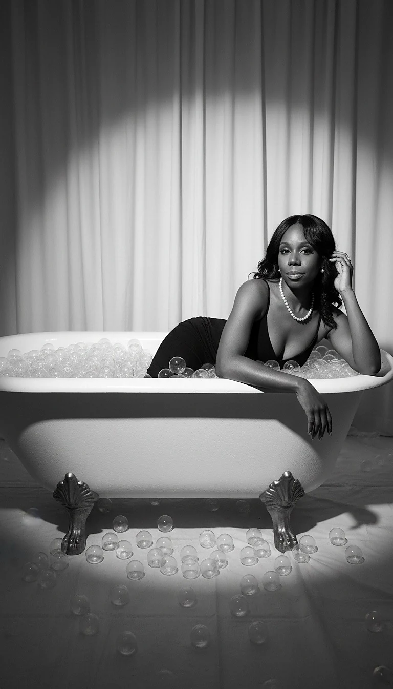

Confidence Conversations
Honest spaces to examine the stories, comparisons, and fears that have shaped the way you see yourself.

The experience
Let’s Face It is an invitation for women to meet themselves with honesty, gentleness, and courage. Beauty is part of the conversation, but it is never the whole conversation. This pillar centers identity, confidence, self-care, faith, and the freedom to become visible in your own life again.
Tell us what you are envisioningHow this pillar lives
Honest spaces to examine the stories, comparisons, and fears that have shaped the way you see yourself.
Intentional rituals and practical guidance that treat care as stewardship, not performance.
Encouragement rooted in the belief that worth is received from God, not negotiated with the world.
Women-centered conversations, workshops, and moments designed to reconnect confidence with community.

“You do not need to become worthy. You need to remember that you already are.”Designed By Lu
What guides the work
Confidence grows when identity is no longer dependent on comparison, approval, or perfection.
Adornment can be joyful without becoming a mask. The goal is expression, not erasure.
The next version of you may require new boundaries, new language, and a new willingness to be seen.
Begin here
Bring the date, the room, the story, the question, the dream—or simply the feeling you want to create. The first step is a conversation.
Begin your renewal